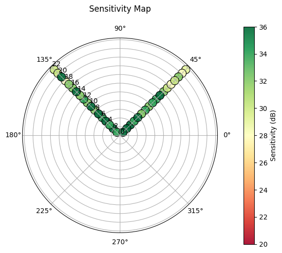
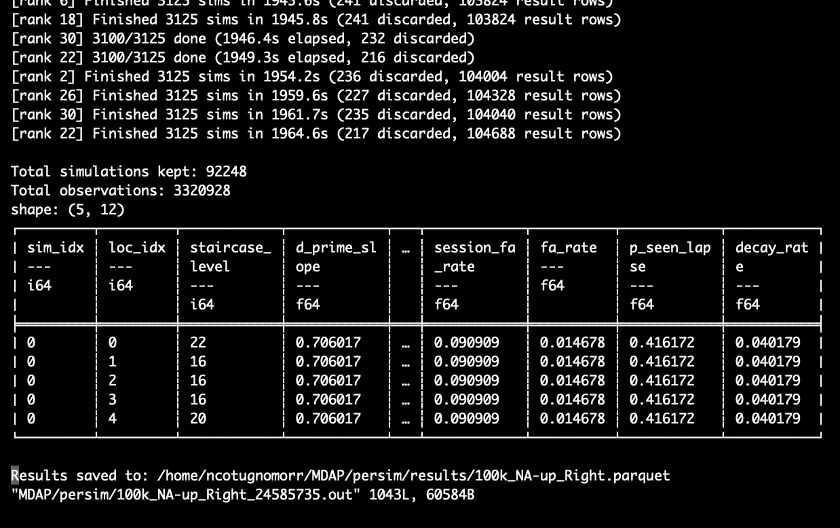
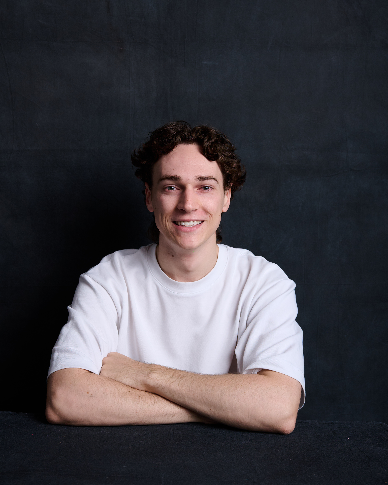

Intern’s report
My Time at MDAP: Simulating Human Vision
MDAP Internship Semester 1, 2026
Nicholas Cotugno Morrison
Supervised by Dr Damien Mannion
Introduction and Aims
Throughout my time at MDAP, I was given the incredible opportunity to work on a project at the intersection of data science and human perception. This project focused on microperimetry, which is a diagnostic test that maps out how sensitive the retina is to light across different parts of a person’s visual field.
While doctors rely heavily on these tests to monitor retinal diseases, the current models they use often assume a patient’s response is based purely on the stimuli and their ability to see it. However, human behavior is far messier… people might lapse in concentration or press the button by mistake! Recognising this, our overarching goal was to expose the shortfalls of these standard assumptions which led to three main aims:
- To build a more realistic observer model that accounts for these human factors
- To create an accurate spatial model of the visual field
- To quantify the difference the correct assumptions make on the resulting sensitivity measurements
My Role and Contributions
During the internship, my main focus was on extending the simulation codebase. My key contributions to the project included:
- Modelling the visual field as location dependent
- Incorporating prior distributions for some of the models’ parameters
- Running large-scale simulations in parallel on the University’s high-performance computing cluster, SPARTAN.
Achievements, Learnings, and Technical Challenges
What did I achieve? By the end of the project, I was able to quantify the difference between the correct assumptions and the current assumptions used in practice. This milestone was only possible by extending our codebase to incorporate both an accurate observer model and an accurate spatial model of the visual field, and by running an extensive set of simulations on SPARTAN.
What have I learnt? My undergraduate studies in Data Science gave me the foundations (in probability theory and Bayesian statistics), but applying those tools to model human vision and decision-making was a steep and rewarding learning curve. The project deepened my understanding of the complexities of human vision and introduced me to Signal Detection Theory as a framework for modelling perceptual decisions all from a Bayesian perspective.
How did I overcome technical issues? Whenever I hit a roadblock, technical issues were overcome by consulting with my fantastic supervisor, who is truly an expert in the field of human perception. I also spent time reviewing literature, although this was a challenge in of itself because a lot of the time the literature didn’t have the exact answers we were looking for.
Research Outcomes
Here is a look at one of the resulting simulated microperimetry sessions which utilise the improved observer and spatial models.

Running a single simulation is fine, but to quantify the difference between the assumptions, we need to run the simulations on a much larger scale. This is where SPARTAN comes in. It allowed me to run simulations in parallel, drastically increasing the scope of our analysis.

While the research is still ongoing, the simulations have already helped quantify the difference between the simplified assumptions currently used in practice and more realistic models of human perception and decision-making. These findings would not have been possible without incorporating accurate observer and spatial models of the visual field, and I am glad to have been able to contribute to work that may one day improve how visual function is measured and support better outcomes for patients.
About Me
My name is Nicholas, and I have just begun my Masters in Data Science at the University of Melbourne. I love all things motorsport and have been long fascinated with the wonders of the universe. If I’m not watching races or reading up on space news, you can likely find me working on software for The University of Melbourne’s rocketry team (ARES).
I found myself applying to MDAP at the start of my Masters because I wanted to get a taste of what working in research is like, and I thought that MDAP would be the perfect environment to apply what I had learnt in my undergraduate studies. I would highly recommend an internship at MDAP! You not only get to work on projects that are both interesting and challenging, but you also get to collaborate with some incredibly brilliant and supportive people in the research field.
